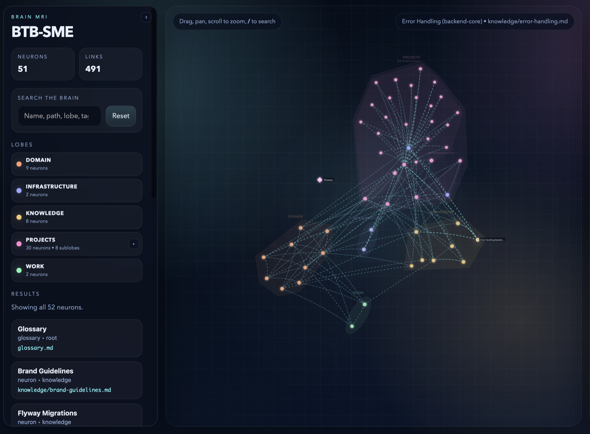

Prefer watching? The 3-minute video above covers the whole idea — or read on.
I gave every AI agent on my team the same shared brain — and it started answering like my senior engineer on her best day.
Kluris is an open-source CLI that turns a folder of markdown into a git-backed knowledge base your AI agents actually read. Claude Code, Cursor, Copilot, and five more — all working from the same truth.

The problem nobody wants to admit
Your AI agent is smart. It is also amnesiac.
Every new chat starts from zero. It doesn't remember that you picked raw SQL over an ORM and why. It doesn't know your service uses Keycloak or that JWTs rotate at 80% TTL. It has never heard of the January outage. It is re-deriving all of that from the code, badly, on every conversation — and then your teammate opens a different agent in a different editor and re-derives it slightly differently.
Meanwhile, the docs you do have — in Notion, Confluence, a wiki, a battered README — are written for humans. Agents can't search them, can't link between them, can't write back to them. The CLAUDE.md or AGENTS.md file you wrote last month is per-project, per-tool. Your senior engineer's knowledge, the thing that actually decides most PRs in your repo, lives in her head and leaves the company when she does.
I built a tool because this bothered me enough. It's called Kluris.
What it does, in one line: it gives every AI agent on your team a shared, human-curated, git-backed knowledge base — so they behave like an SME who already knows your codebase, not a stranger starting from scratch every morning.
pipx install kluris
kluris createThen, inside Claude Code / Cursor / Windsurf / Copilot / Codex / Gemini CLI / Kilo / Junie:
> /kluris learn everything about this serviceThat's the whole loop. The agent analyzes your repo, proposes knowledge to save — one entry at a time — and you approve what's real. Over a few sessions, the brain fills in.
Why not just use a wiki or agent memory?
There are four usual answers to this problem. None of them work.
Wikis and Notion are for humans. Lovely markdown, searchable in a browser, impossible for an agent. Agents can't crawl a Notion workspace. Even if they could, the content is mostly prose — not the structured, linked, per-decision format an agent can actually reason over mid-task.
CLAUDE.md / AGENTS.md is per-project and per-tool. If your team has three services, three CLAUDE.md files drift. If half the team uses Cursor and half uses Claude Code, the knowledge forks. Rules files are a coping mechanism, not an architecture.
Agent memory (the built-in feature Claude and others ship) is agent-controlled. The agent decides what to keep. You don't review it. You don't version it. Another teammate's memory is a different memory. There's no shared truth.
"Just put it in the README." Then the README grows to 4,000 lines and nobody reads it, including the agent, because it blows the context window.
A brain is different. It's:
- Markdown in git — agents read it, humans review it,
git blametells you who decided what. - Structured — decision records capture context → decision → rationale → alternatives → consequences, so future agents (and future you) can actually reason about superseded choices.
- Cross-project — one brain sits above your three services, your infra, your frontend. One source of truth.
- Cross-agent — the same brain installs as a
/klurisslash command in every AI tool your team uses. Same answer everywhere. - Human-curated — nothing is written without your approval. The agent proposes; you edit or skip.
The vocabulary, because it's the whole product
Kluris borrows from neuroscience because the metaphor earns its keep. You won't forget it.
- Brain — the git repo of shared knowledge.
- Lobe — a folder in the brain.
projects/,infrastructure/,knowledge/. Whatever regions fit your team. - Neuron — a single markdown file.
auth-flow.md,docker-builds.md,use-raw-sql.md. - Synapse — a cross-link between neurons. Follow it and you load related context automatically.
- MRI —
kluris mrigenerates a self-contained interactive HTML file: lobes as colored clusters, neurons as nodes, synapses as lines. Click anything, read the rendered markdown, walk the topic. - Dream —
kluris dreamis the maintenance pass: regenerate indexes, fix broken links, auto-repair what's safe, surface warnings for what isn't.
The metaphor isn't decoration. It's a mental model: you're not writing documentation, you're growing a brain. You add lobes as the team grows, prune neurons that are superseded, follow synapses when you lose the plot. It tracks how the thing actually feels to use.
What a week with Kluris looks like
I'll show you a real arc, not a feature tour.
Monday — teach it what you already know
Open your agent in a project. Run:
> /kluris learn the API endpoints and data modelThe agent reads the code, then walks you through proposals one at a time. A small preview, a suggested lobe, a suggested filename. You approve, edit, or skip. In twenty minutes you have fifteen or twenty neurons: the auth flow, the data model, the conventions nobody wrote down.
Tuesday — capture a decision
You just fought with an ORM and picked raw SQL for a complex reporting query. Before the "why" leaves your head:
> /kluris remember we chose raw SQL over JPA for query complexityThe agent drafts a decision neuron (context, decision, rationale, alternatives considered, consequences), shows it to you, you tweak a sentence, approve. Now it's in git. Your teammate's Cursor reads it tomorrow morning.
Wednesday — new hire joins
They pipx install kluris, git clone git@github.com:team/brain.git ~/brains/team, kluris register ~/brains/team, open Claude Code in the project:
> /kluris what do we know about the auth flow?The agent tells them, grounded in the real neurons, with citations. Five minutes, not five days. Then they run kluris mri, open the HTML file in a browser, and literally see the whole brain — clusters of lobes, synapses between related topics. They click through three neurons, get the shape of the codebase, ship a first PR on Thursday.
Thursday — implement a feature
> /kluris implement the new refund endpoint following our conventionsThe agent reads the brain first. It sees the auth-flow neuron, the error-handling decision, the endpoint conventions. It implements to those conventions — and if your code contradicts a documented decision, it tells you, it doesn't silently drift.
Friday — the quiet superpower
You don't notice anything happened. The agent hasn't re-derived anything. Your token usage is lower, because instead of re-crawling the repo on every chat, the agent loads one compact snapshot — kluris wake-up --json — and jumps to the neuron it needs.
Illustrative numbers from the README, on a medium repo:
Without kluris — cold-start orientation:
tree + README + CLAUDE.md ~3,000 tokens
grep for related symbols ~2,000 tokens
read 4–8 relevant files ~15,000 tokens
read 2–3 sibling-project files ~8,000 tokens
─────────────
~28,000 tokens
With kluris — same task, brain-backed:
wake-up snapshot (brain + lobes + recent + glossary) ~1,200 tokens
search "<query>" (ranked hits with snippets) ~400 tokens
read 1–2 matching neurons ~1,500 tokens
─────────────
~3,100 tokensNot a benchmark — a shape. The shape says: a wide crawl becomes a targeted lookup. The savings compound the more projects you touch. And what matters more than the number is that the agent spends its context budget on the actual work, not on orientation.
The two surfaces
This is the part that trips up most first-time users. Kluris lives in two places.
| Surface | Prompt | Where | Examples |
|---|---|---|---|
| Terminal | $ kluris … | bash / zsh / PowerShell | kluris create, kluris dream, kluris mri, kluris status |
| AI agent | > /kluris … | Claude Code, Cursor, Windsurf, Copilot, Codex, Gemini CLI, Kilo, Junie | /kluris learn, /kluris remember, /kluris search, /kluris implement |
Terminal commands handle setup, git, maintenance, and anything the agent calls internally. Slash commands are for the conversation — they're how you teach, query, and grow the brain without leaving your coding flow. Every time you see a code block in the Kluris docs, it's marked as one or the other. Nothing ambiguous.
The quiet architectural decisions I'm proud of
If you're building in this space and thinking about it seriously, a few choices worth calling out:
- Everything is markdown in git. No proprietary format. You can open a neuron in VS Code,
git blameany line, fork the repo, grep it. If Kluris disappears tomorrow, your brain is a normal git repo and a normal folder of markdown. Escape hatch by construction.
- Human approves every entry. Agent memory fails because the agent is the judge of what's important. Wikis fail because nobody writes in them. Kluris splits the labor: the agent proposes (because it's the one reading code all day), the human approves (because only a human knows what's actually durable). Both roles play to their strength.
- One brain, many agents. Kluris installs the
/klurisskill for eight agents at once. When you switch editors — or your teammate does — the knowledge moves with you. This is not just "Claude memory" — it's your team's memory, independent of tool.
- The per-brain slash command trick. With one brain registered, the slash command is
/kluris. With multiple (say, you have a work brain and a personal brain), each brain installs as/kluris-acme,/kluris-personal. Each skill is bound to exactly one brain — the agent never has to guess which one you mean. Ambiguity is designed out.
- MRI is just an HTML file. No server, no account, no external calls. Commit it to the repo, email it, drop it in Slack. It's the best onboarding tool I've ever made, and it's a static file.
- wake-up is a bootstrap protocol, not a vibe. On the first
/klurisof a session, the agent runskluris wake-up --json— a compact snapshot with brain.md, lobe list + neuron counts, the 5 most recently updated neurons, the glossary, and any deprecation warnings. Cheap, deterministic, and it replaces the "agent walks the whole repo on every turn" failure mode.
Who this is for
If any of these sound familiar, try Kluris:
- You've written the same explanation three times in three different agent chats.
- Your CLAUDE.md has grown past 500 lines and the agent still gets basic things wrong.
- A senior engineer left and the team feels it every week.
- You use multiple AI coding tools and your knowledge has forked across them.
- You're planning a feature and the agent keeps re-discovering decisions you already made.
- You want AI agents to act like an SME, not a stranger.
If you're a solo hobbyist on one codebase, honestly — you can probably live with CLAUDE.md. Kluris is for teams, or for individuals who juggle enough projects that "teammate-with-myself-next-quarter" is a real persona.
Try it in five minutes
# 1. Install the CLI
pipx install kluris
# 2. Create your first brain (interactive wizard)
kluris create
# 3. Open your favorite AI coding agent in a project, then:> /kluris learn everything about this serviceThen run kluris mri and open the HTML file. That's the moment most people get it.
The project is MIT-licensed, Python 3.10+, and works offline — your data is yours, in your git repo. It pairs especially well with Specmint if you do spec-driven development — Specmint consults the brain during its research phase so features start grounded in decisions your team already made.
- GitHub: github.com/ngvoicu/kluris
- Site: kluris.ngvoicu.dev
- Guided tour: kluris.ngvoicu.dev/presentation.html
If you try it, I want to hear what breaks. Open an issue or reach out. The brain metaphor either clicks for people in thirty seconds or not at all — and I want to know which one you are.
Kluris is built by Gabriel Voicu. It's free, open-source, MIT-licensed, and will stay that way.